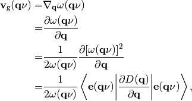
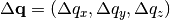
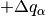
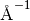
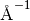

Method¶
Phonopy calculates group velocity of phonon as follows:

where the meanings of the variables are found at Formulations.
Finite difference method¶
In the previous versions, group velocity was calculated using finite difference method:

Group velocity calculation with the finite difference method is still
able to be activated using GV_DELTA_Q tag or -gv_delta_q
option.  is described in Cartesian coordinated in reciprocal space. In
the implementation, central difference is employed, and  and are taken to calculate group
velocity, where  is the Cartesian index in reciprocal
space. is specified in the unit of reciprocal
space distance ( for the default case) by
is the Cartesian index in reciprocal
space. is specified in the unit of reciprocal
space distance ( for the default case) by
--gv_delta_q option or GV_DELTA_Q tag.